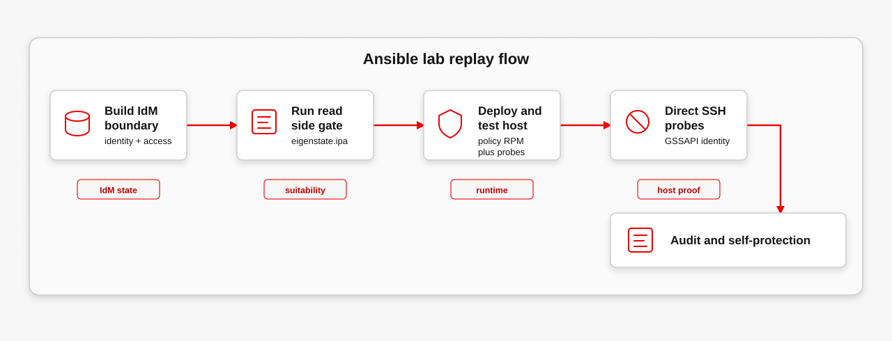

This exercise follows the non-AAP cast. It runs from bastion-01, uses Ansible for the lab work, and proves the same host-local boundary without involving Controller. Use it when the goal is to understand the bootstrap proof before the AAP verification path.
Goal
The exercise is successful when IdM contains the expected automation identity and policy objects, eigenstate.ipa can read the suitability state, the managed host enters blastwall_u:blastwall_r:blastwall_t:s0, sudo reaches UID 0 without leaving blastwall_t, and the denial probes include visible Dirty Frag xfrm/RxRPC evidence.

Prerequisites
- Run from the staged
poc-calabi/tree onbastion-01. - The IdM server, bastion host, managed endpoint, and lab credentials must already exist.
- The playbooks need the IdM admin credential and the automation identity credential through the documented environment variables.
- Use this page as the guided replay and source runbook for the non-AAP proof path.
Inputs And Environment Variables
Provide IdM credentials through the environment before running the playbooks. The lab supports the password fallback; keytab-backed automation is the cleaner production-style direction.
export IPA_ADMIN_PASSWORD='...'
export BLASTWALL_AUTO_PASSWORD='...'
# Optional keytab-backed path:
export IPA_PRINCIPAL='svc-ansible-runner'
export IPA_KEYTAB='/path/to/svc-ansible-runner.keytab'Execution Boundary
Run the playbooks from the staged poc-calabi/ tree on bastion-01. The workstation should not directly configure guests.
cd ~/blastwall/poc-calabi
ansible-playbook 00-preflight.ymlPoC Playbook Chain
This is the compact source-level run order for the poc-calabi/ overlay. It exists to map the replay back to the playbooks; the proof itself remains the IdM, SELinux, and audit evidence described below.
ansible-playbook 00-preflight.yml
ansible-playbook 10-configure-idm.yml
ansible-playbook 15-validate-idm-with-eigenstate.yml
ansible-playbook 20-build-policy-rpm.yml
ansible-playbook 30-deploy-and-test.yml
ansible-playbook 35-test-self-protection.ymlRetry Points
- Rerun
00-preflight.ymlwhen connectivity or inventory looks wrong. - Rerun
10-configure-idm.ymlwhen identities, groups, HBAC, sudo, or SELinux maps drift. - Rerun
15-validate-idm-with-eigenstate.ymlbefore deployment whenever IdM state changed. - Rerun
20-build-policy-rpm.ymlonly when policy source or package metadata changed. - Rerun
30-deploy-and-test.ymlwhen the managed-host proof needs fresh evidence.
Use cleanup only when the lab should return to a baseline state for another recording or replay. Do not run cleanup between normal evidence reads.
ansible-playbook 99-cleanup.ymlProcedure
1. Build The Identity Boundary
Create the service identity, the blastwall group, HBAC, sudo, hostgroup, and SELinux user-map state. Then read the important IdM objects directly so the exercise is not trusting Ansible output alone.
ansible-playbook 10-configure-idm.yml
kinit admin
ipa user-show svc-ansible-runner --all --raw |
grep -E 'uid:|memberof_group:|memberOf:'
ipa group-show blastwall --all --raw |
grep -E 'cn:|member_user:|member:'Expected output: svc-ansible-runner exists, belongs to the blastwall group, and IdM contains the access records used later.
2. Run The Read-Side Gate
Use eigenstate.ipa before touching the endpoint. This proves the inventory-facing view can see the SELinux map, HBAC rule, sudo rule, and candidate host.
ansible-playbook 15-validate-idm-with-eigenstate.yml |
tee /tmp/blastwall-eigenstate.log
grep -E 'hbac_rule|selinux_map|sudo_rule|target' \
/tmp/blastwall-eigenstate.logExpected output: the log shows blastwall-root-local-map, blastwall-ssh, blastwall-root-local-sudo, and mirror-registry.workshop.lan.
3. Deploy And Prove The Host
Deploy the policy RPM to the managed host and run the proof play. This is the point where the exercise stops being an identity check and becomes a host-local SELinux check.
ansible-playbook 20-build-policy-rpm.yml
ansible-playbook 30-deploy-and-test.yml |
tee /tmp/blastwall-proof.log
grep -E 'blastwall_u:blastwall_r:blastwall_t:s0|BLOCKED|SKIP' \
/tmp/blastwall-proof.logExpected output: the proof log shows blastwall_u:blastwall_r:blastwall_t:s0, sudo UID 0, and blocked probe output.
4. Mark The Dirty Frag Response Date
Keep the timing explicit when replaying the non-AAP path.
date -u '+Dirty Frag response marker: %Y-%m-%d %H:%M:%S UTC'
echo 'Blastwall 0.5.2: verify xfrm and RxRPC are denied for confined automation'Expected output: the replay records that Dirty Frag was publicly documented on May 7, 2026, and this run verifies the xfrm and RxRPC deny scopes on May 8, 2026.
5. Run The Probes Directly
Direct GSSAPI SSH probes make the proof easy to follow. The automation identity logs in normally, lands in the confined SELinux context, and the risky kernel surfaces are unavailable from that session.
kinit svc-ansible-runner
ssh -o GSSAPIAuthentication=yes \
svc-ansible-runner@mirror-registry.workshop.lan \
/usr/local/libexec/blastwall-poc/trigger-copyfail-afalg.py
ssh -o GSSAPIAuthentication=yes \
svc-ansible-runner@mirror-registry.workshop.lan \
/usr/local/libexec/blastwall-poc/trigger-bpf-deny.py
ssh -o GSSAPIAuthentication=yes \
svc-ansible-runner@mirror-registry.workshop.lan \
/usr/local/libexec/blastwall-poc/trigger-packet-socket-deny.py
ssh -o GSSAPIAuthentication=yes \
svc-ansible-runner@mirror-registry.workshop.lan \
/usr/local/libexec/blastwall-poc/trigger-userns-deny.py
ssh -o GSSAPIAuthentication=yes \
svc-ansible-runner@mirror-registry.workshop.lan \
/usr/local/libexec/blastwall-poc/trigger-io-uring-deny.py
ssh -o GSSAPIAuthentication=yes \
svc-ansible-runner@mirror-registry.workshop.lan \
/usr/local/libexec/blastwall-poc/trigger-dirtyfrag-deny.pyExpected output: the probes print denied entry points. AF_ALG may appear as the documented socket-denial SKIP shape, depending on where socket creation fails. Dirty Frag should report NETLINK_XFRM blocked and AF_RXRPC blocked, or an AF_RXRPC SKIP when the kernel lacks that protocol.
6. Read Audit Evidence
Finish with target-side evidence. The audit log confirms the denials happened under blastwall_t, not just inside a local script variable.
ansible automation_endpoints -i inventory.yml -b -m shell -a '
grep -a "subj=blastwall" /var/log/audit/audit.log |
tail -n 16'Expected output: the target audit log includes denial records for the confined blastwall_t subject.
7. Self-Protection Check
The final check temporarily exposes /usr/sbin/semodule through sudo, then proves SELinux still prevents the confined automation identity from removing its own deny policy.
ansible-playbook 35-test-self-protection.yml |
tee /tmp/blastwall-selfprotect.log
grep -E 'sudo_expansion_seen|semodule_attempt_rc|Permission denied|blastwall-(alg|bpf|packet|userns|io-uring|policy)' \
/tmp/blastwall-selfprotect.logExpected output: the automation identity can see the temporary sudo expansion, but SELinux denies policy-management execution from blastwall_t.
Troubleshooting
- If SSH fails before the proof starts, rerun the preflight and confirm the bastion can reach the managed endpoint through the lab inventory.
- If IdM state is missing, rerun
10-configure-idm.ymlbefore the read-side gate. - If
eigenstate.ipacannot see the target, inspect the IdM hostgroup, HBAC rule, sudo rule, and SELinux user map before deploying policy. - If probes fail differently than expected, check the SELinux context first with
id -Z, then read the target audit log.
Expected Output
svc-ansible-runneris present in IdM and belongs to theblastwallgroup.eigenstate.ipareports the expected SELinux map, HBAC rule, sudo rule, and candidate host.id -Zreportsblastwall_u:blastwall_r:blastwall_t:s0.sudo -n /usr/bin/id -ureturns0without leavingblastwall_t.- AF_ALG may print
BLOCKEDor the documented socket-denialSKIPshape. - BPF, packet_socket, userns, io_uring, and
NETLINK_XFRMprintBLOCKED. AF_RXRPCprintsBLOCKED, orSKIPwhen the kernel lacks RxRPC support.- The self-protection play shows sudo expansion is visible, but SELinux blocks policy-management execution from
blastwall_t.
Cleanup Or Reset
Use cleanup only when the lab needs to return to baseline before a fresh replay.
ansible-playbook 99-cleanup.yml